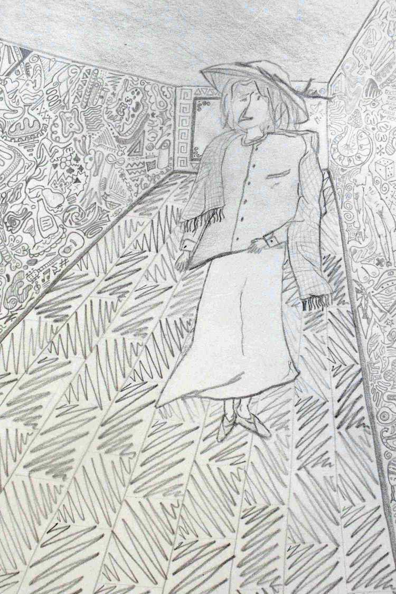

This is an independent editorial initiative. These texts are henceforth released to the public, i.e. published.
The poems published below can be consulted for free.
If you like them and want to support the author, you can make a free donation to my PayPal account, by clicking on the icon below.
GRAMMA
Click here to download the full volume.Circadiani
Bambino IBambino II
Bambino III
Bambino IV
TorSoli
Simulacro
Trailer
Rhein Sprung, Münster Platz
Atarassia
La ragnatela
Manhattan
Sfregi
Feritoie1972 (Serena)
Red, Green & Blue
Deliverance
Segno aria
Fuoco fatuo
Metavulcano
Vulcano
Stecche di balena
Lichene
Crisalidi
Tamburo
Falle
Formerly M.T.
Francesca Woodman
Poli
PolifoniaPolicromia
L' alter
Per oraFacce
Renne
Sedimenti
Confini
Focaia (15 settembre)
Povertà magnanima
Fertile
Speech arrest
Rosa di Jericho
Scirocco
Giulio
Bussola
Oceanico
Cuccu bau
Vegetale
Giro di vento
Ovarico
Buenos Aires
Relitto
Folate
EmphasisNaima
Jade visions
Phum
In cerca di cibo
RIP
MuoioImpatto
Micelio
Ignoto
SAD
Officium
Haiku
Immigrant Haiklu (3)